FerraPro — ferrapro.com
D fayans + B yazı birleşik üstte — FER (Ayfer) · RA (Ramazan) · PRO
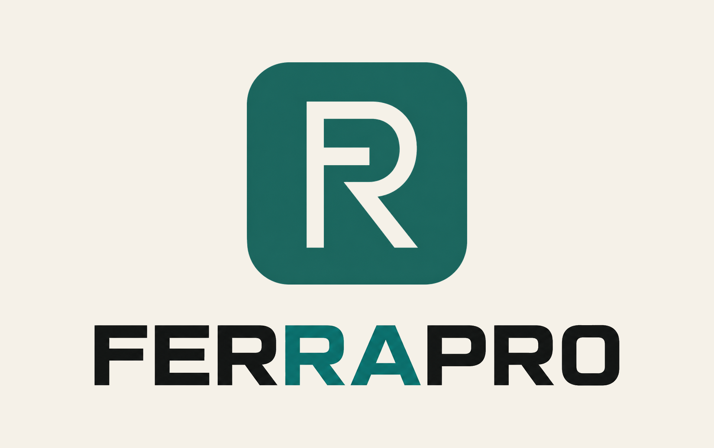
M — petrol fayans üstte, FERRAPRO altta
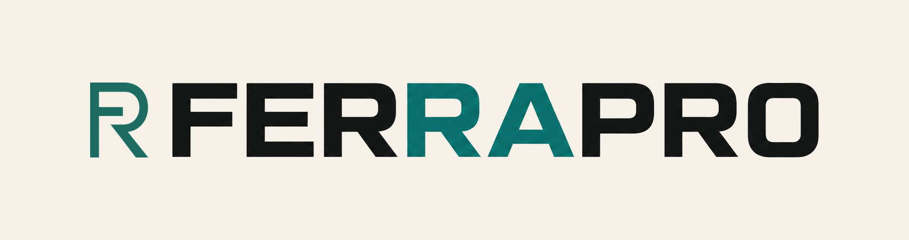
A — FR işaret + FER / RA / PRO renk
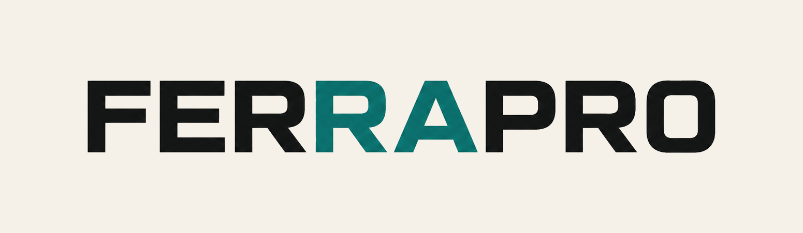
B — sadece yazı, FER / RA / PRO
C — kare FR işaret
D — petrol fayans (uygulama ikonu)
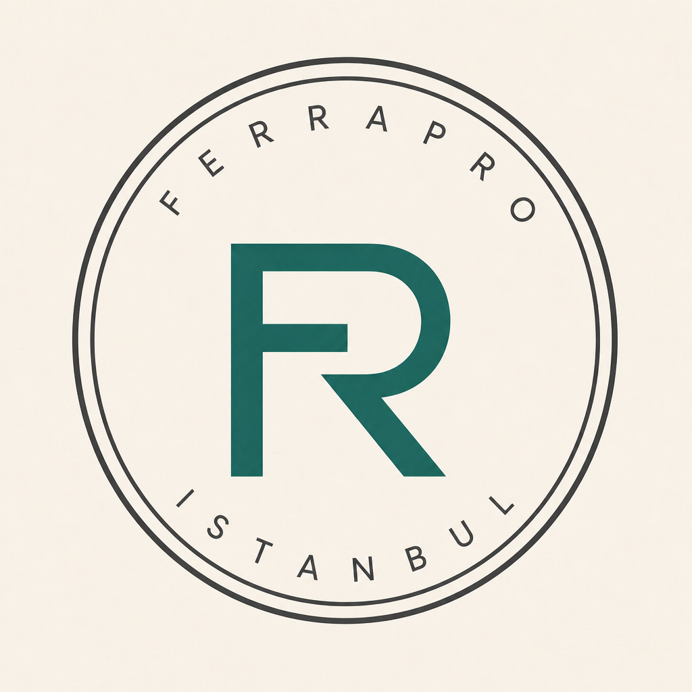
E — mühür
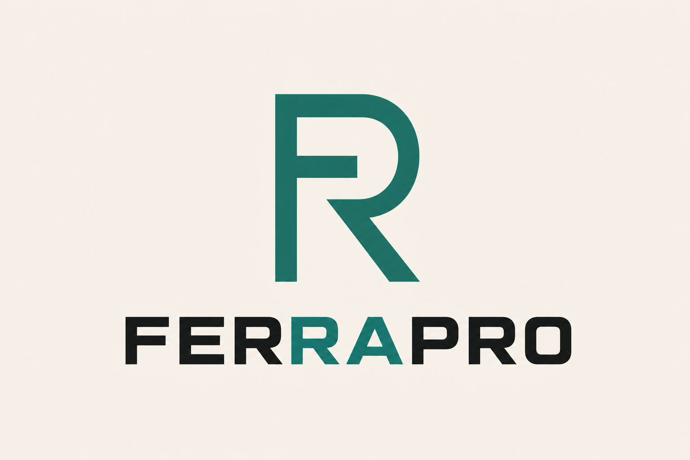
F — istif (üst işaret, alt yazı)
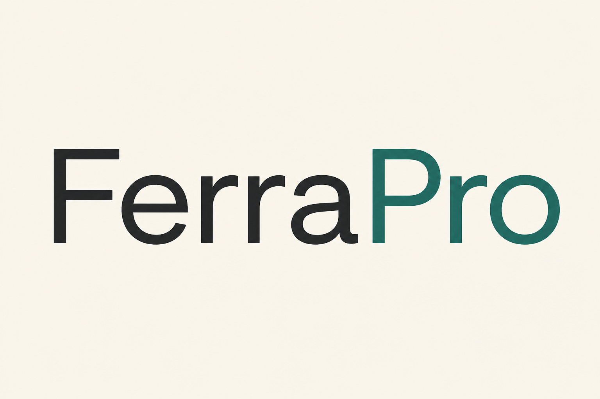
G — FerraPro (Ferra siyah, Pro petrol)
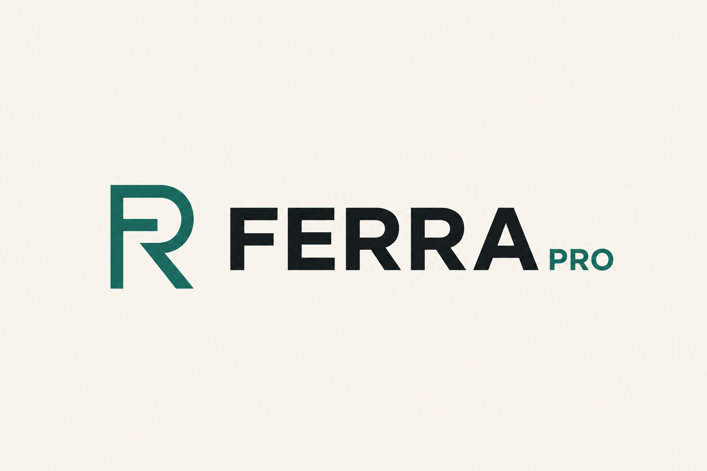
H — FERRA + küçük PRO eki
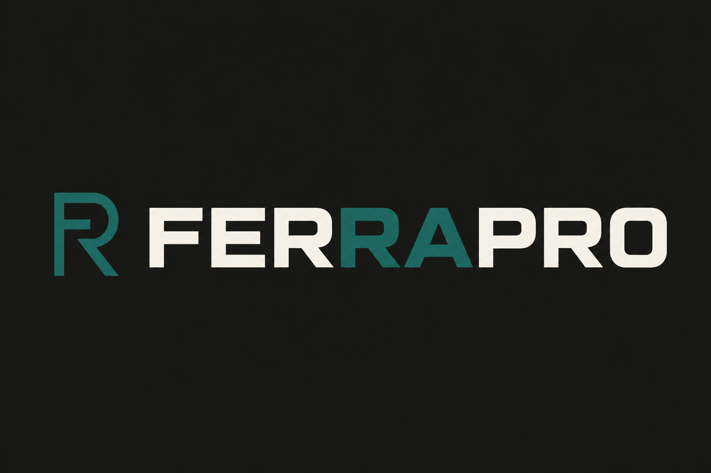
I — koyu zemin
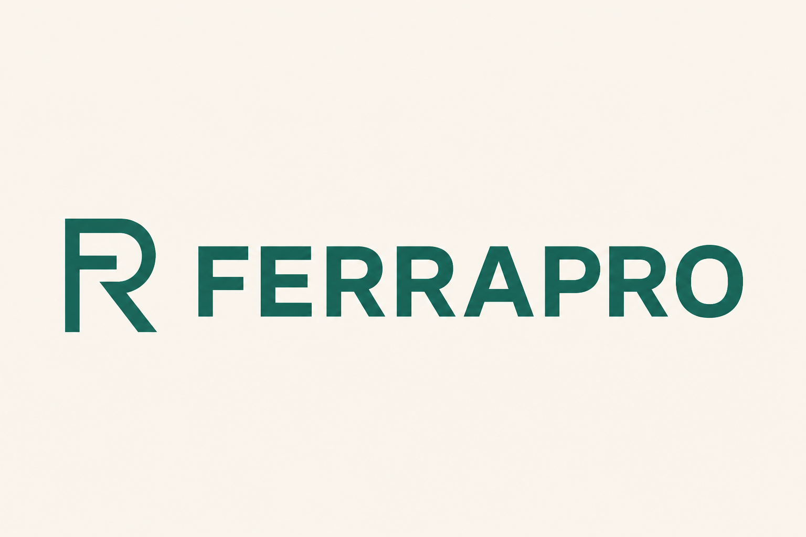
J — tek renk petrol
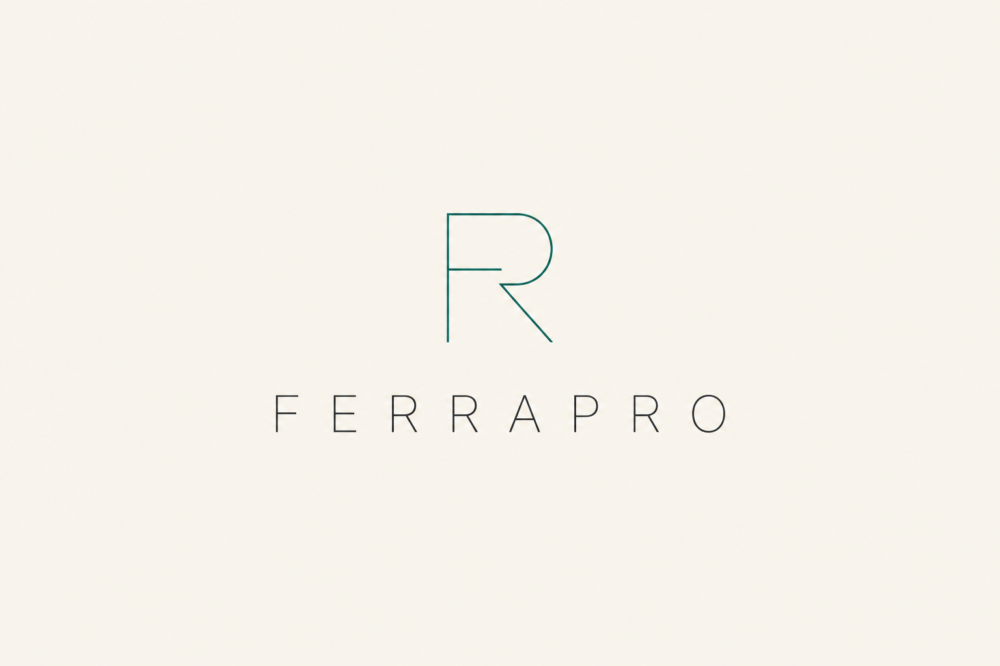
K — ince / klas
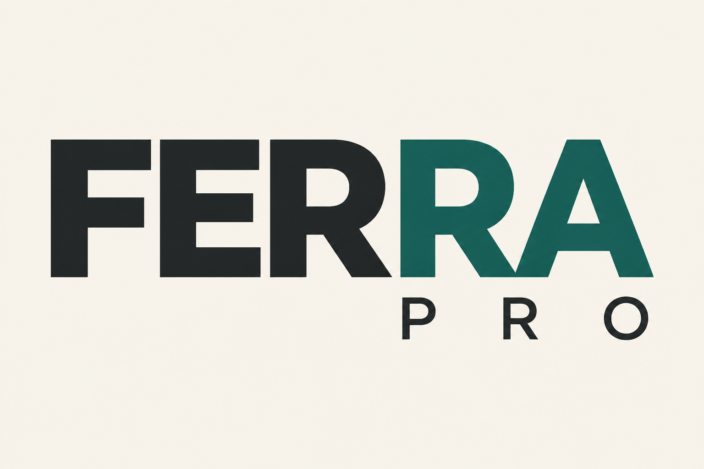
L — dergi başlığı (FERRA / PRO)